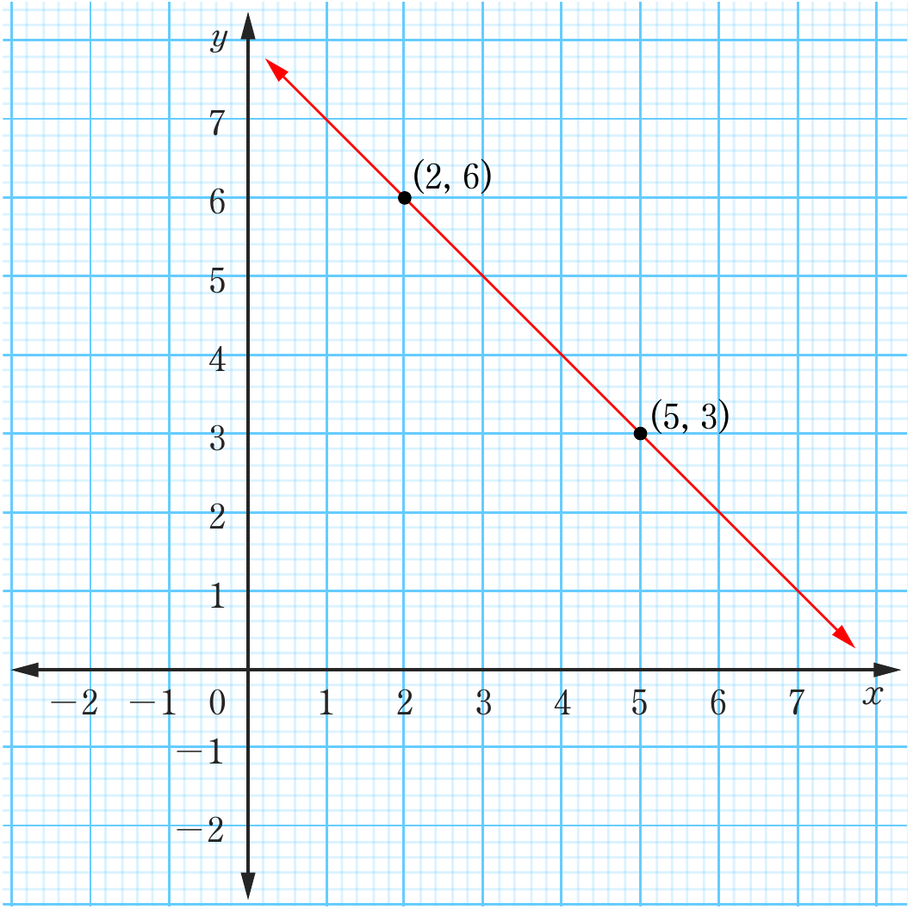
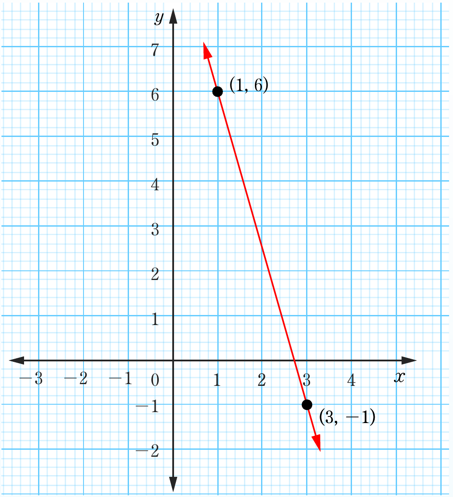

(d)

Gradient is negative
(e)

Gradient is negative
Two coordinate graphs showing negative gradient: top, a red line descending from left to right through points (2, 6) and (5, 3); bottom, a steeper red line descending from left to right through points (1, 6) and (3, -1).(2, 6)(5, 3)(1, 6)(3, −1)